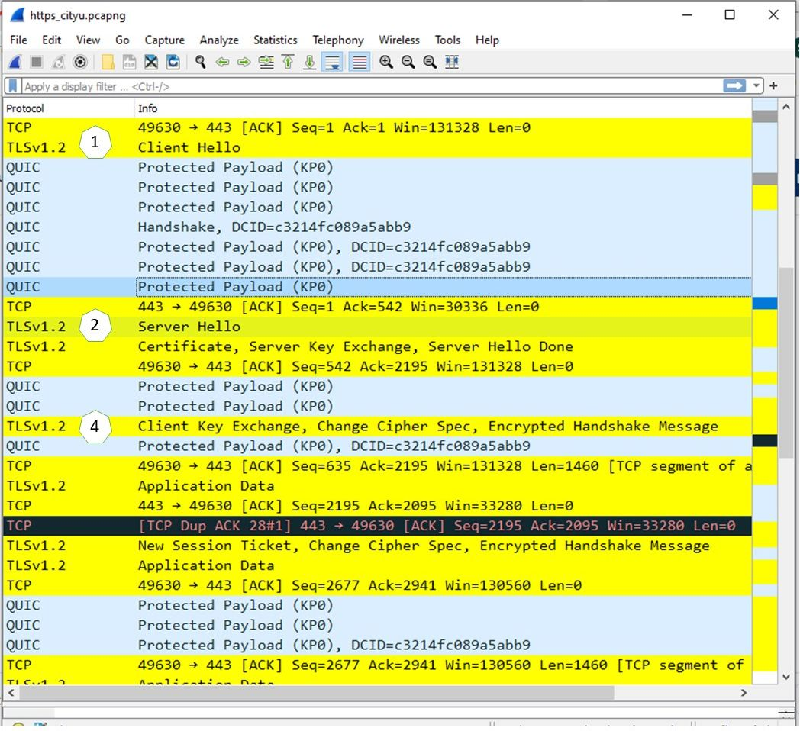

As discussed, the main difference between HTTPS and HTTP is the use of encryption. In HTTPS, Transport Layer Security (TLS) is used to encrypt the request and response between the client and web server to increase security of data transfer, i.e. HTTPS is not a separate protocol from HTTP but the use of TLS encryption over HTTP. The TLS certificate is also used to verify that the web server is indeed authentic.
All HTTPS communications are also done by requests and responses between the client and the server but have additional steps to cater for the exchange of TLS version, encryption protocol supported, digital certificate etc.
HTTPS Requests and Response
The exact requests and response between the client and server under HTTPS vary depending on the TLS version. To illustrate, the steps of TLS 1.2 connection are given below.

HTTPS requests and responses captured by Wireshark
Client Hello:
the client will initiate a connection by sending a Hello message to the web server
the client will also send a list of supported TLS (e.g. TLS 1.0, 1.1, 1.2 etc.) and the cipher suite (e.g. TLS_RSA_WITH_AES_128_CBC_SHA256, TLS_ECDHE_RSA_WITH_AES_128_GCM_SHA256) to the server
Server Hello:
the web server will respond to the connection request by sending Hello message to the web browser
the server will send over its TLS certificate and the chosen encryption algorithm
Authentication:
the client verifies the server’s TLS certificate with the certificate authority
Session Key:
after validation, the client will send over the pre-master secret which is encrypted with the server’s public key
the client and web server use the pre-master secret to create the session keys independently
the client and server acknowledge they are ready by exchanging the Finished message using the session keys
All subsequent exchanges will be encrypted using the session keys. The client decrypts and renders the received content from the server.